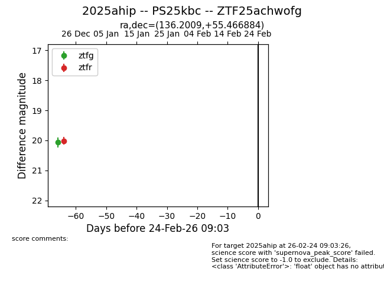
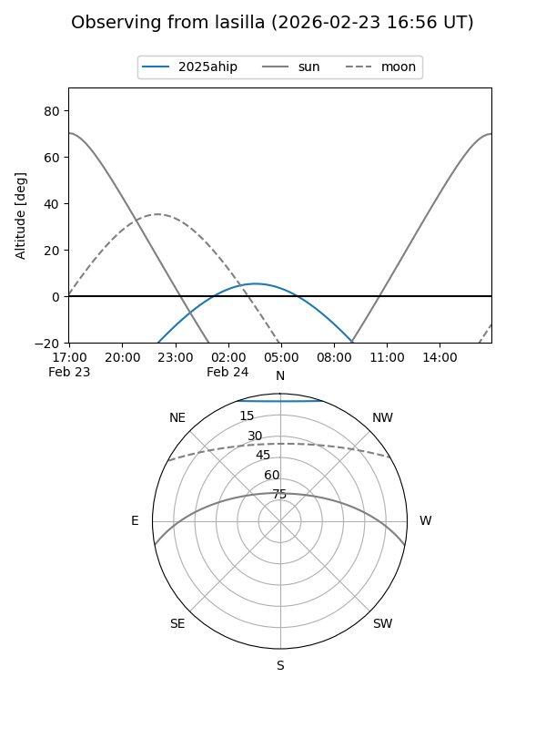
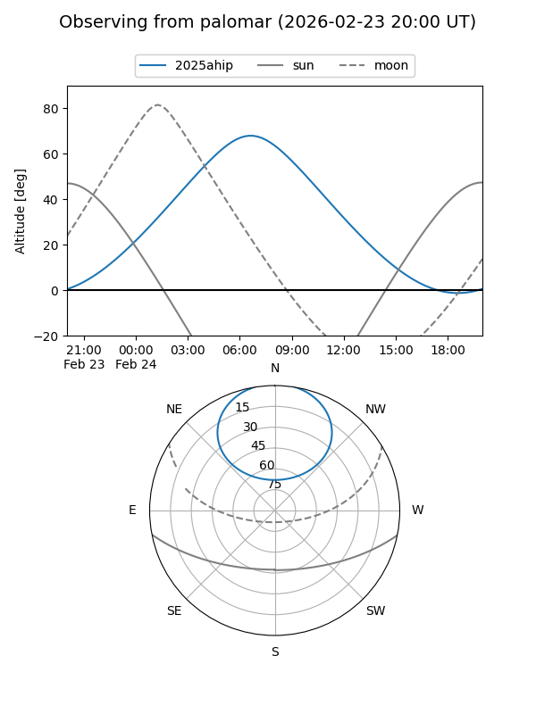

2025ahip
Target 2025ahip at 2025-12-29 23:35
Aliases and brokers:
FINK: fink-portal.org/ZTF25achwofg
Lasair: lasair-ztf.lsst.ac.uk/objects/ZTF25achwofg
ALeRCE: alerce.online/object/ZTF25achwofg
TNS: wis-tns.org/object/2025ahip
YSE: ziggy.ucolick.org/yse/transient_detail/2025ahip
alt names
ZTF25achwofg (ztf,fink_ztf)
2025ahip (tns,yse)
PS25kbc (panstarrs)
Coordinates:
equatorial (ra, dec) = 136.2009,+55.46688
equatorial (HMS+DMS) = 09:04:48.21,+55:28:00.78
galactic (l, b) = (161.6331,+40.76330)
Flags:
Photometry:
last ztfg=20.07, ztfr=20.01
1 ztfg, 1 ztfr detections
Lightcurve

Visibility


Additional plots